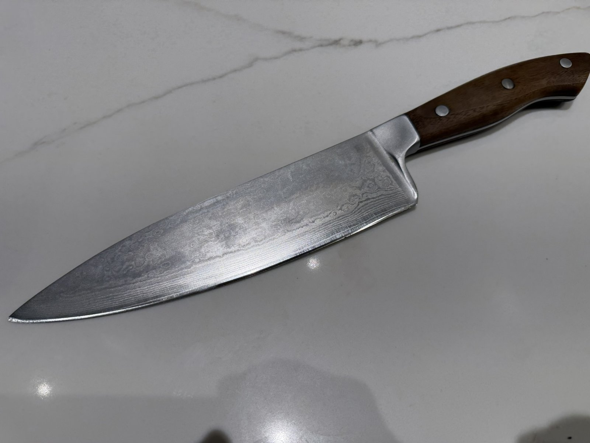
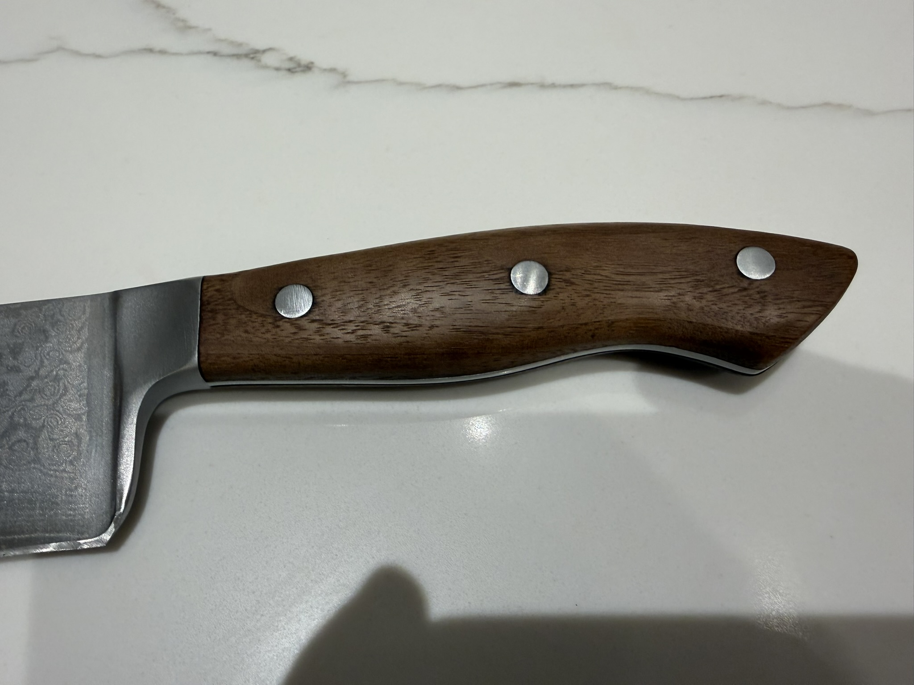
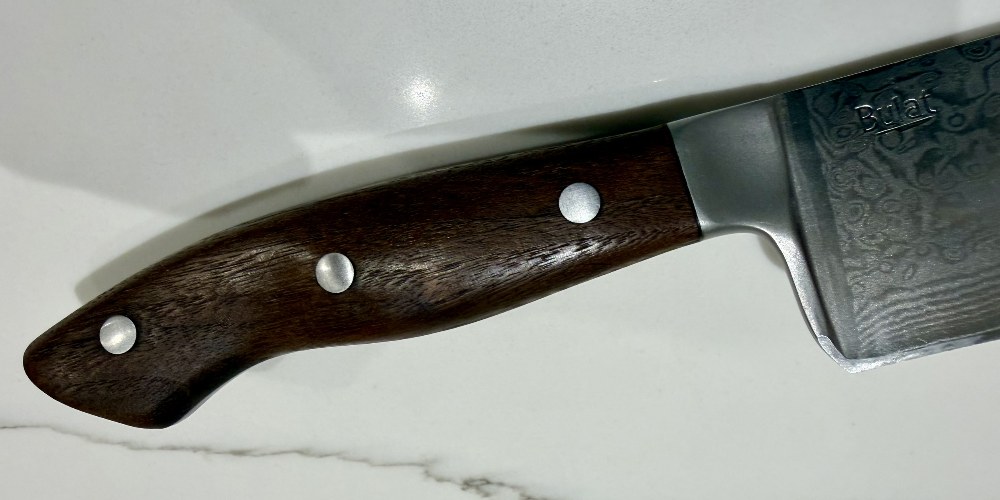
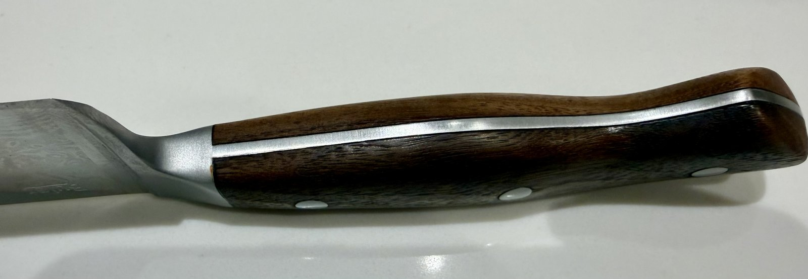
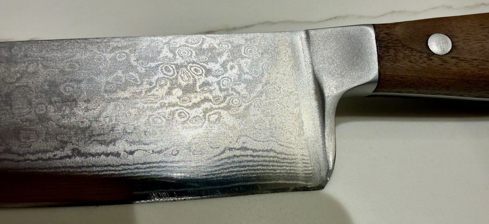
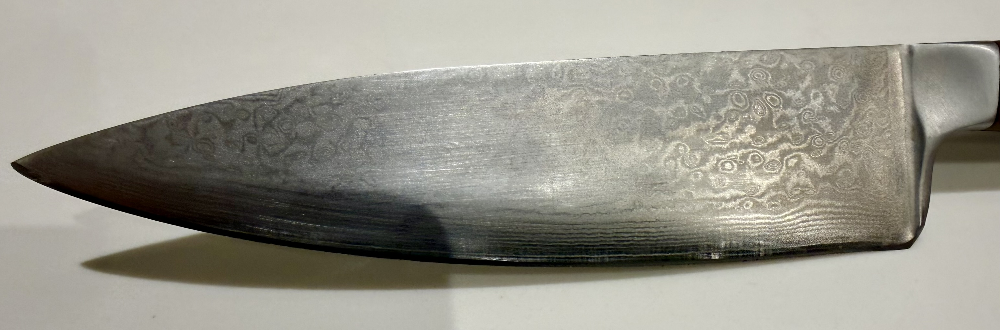

A Kickstarter knife that earned its place.
I backed Bulat Kitchen on Kickstarter a number of years ago. They were a small Canadian knife company making Damascus steel chef's knives at an accessible price point — real Damascus, not laser-etched pattern steel. The blades are forged from multiple layers of folded high-carbon steel, then acid-etched to reveal the characteristic flowing, paisley-like grain pattern. The "Bulat" stamp is etched right into the blade near the bolster.
This is an 8" chef's knife — the workhorse. Full tang, steel pin rivets, walnut scales, a tapered blade with a gentle curve, and that Damascus pattern rippling from tip to bolster. It's an honest, well-made knife.
After years of regular kitchen use, the wooden scales had become noticeably dry. Not damaged — no cracks, no lifting — just thirsty. The wood had lost its depth and warmth. The kind of thing most people wouldn't notice, but once you see it, you can't unsee it.


Quick, deliberate, done right.
No before photos — but the condition was easily described: dry scales with flat, faded grain. Nothing structural to address, no fills needed. Just wood that had been neglected for too long and needed to be brought back.
Step 1 — Light sanding. 180 grit to open up the surface and remove the oxidized outer layer. Light touch — these scales didn't need reshaping, just freshening. Then 220 grit to smooth things back out and raise the grain slightly before finishing.
Step 2 — Walrus Oil. Three coats of Walrus Oil (polymerized tung oil), one per day. Apply a generous coat, let it soak in for 10–15 minutes, then wipe off every trace of excess. The wipe-off step is not optional — pooled oil gets tacky and gummy if left. Each coat cured for 24 hours before the next went on.
Step 3 — Renaissance Wax. A light coat of Renaissance Wax buffed out with a lint-free cloth. This seals everything in, adds a subtle sheen, and gives the handle a hand feel that oiled wood alone doesn't quite achieve.

"The blade is Damascus. It doesn't need my help. The handles just needed a reminder that wood is alive — and responds when you treat it right."
The Damascus does the talking.
I didn't touch the blade. It didn't need it. What the photos show is a Damascus pattern that earns its name — flowing layers of high-carbon steel, acid-etched to reveal the grain. The pattern near the bolster is all tight scrollwork and circles; it opens up into wider flowing lines toward the tip. No two Bulat blades look the same.
This is the kind of steel that reminds you why Damascus commands a premium. It's not decoration layered on top of functional steel — the pattern is the steel.


Quick work. Satisfying result.
This was about an hour of actual work spread across four days (three one-coat-per-day oil sessions plus a final wax). Not a restoration in the heavy-handed sense — more of a maintenance refresh. But the result is a knife that looks and feels the way it should.
The walnut scales went from flat and forgettable to warm and present. The grain reads clearly now, the color has depth again, and the handle has a hand feel that's noticeably better than dry wood. The blade, as always, looks extraordinary and required nothing from me.
The knife: Bulat Kitchen Damascus 8" Chef's Knife.
The work: 180 → 220 grit sanding · 3 coats Walrus Oil (polymerized tung oil) · Renaissance Wax.
Time: About an hour of hands-on work, spread over four days for proper cure time between coats.
Result: Grain depth and warmth restored. Back in rotation.